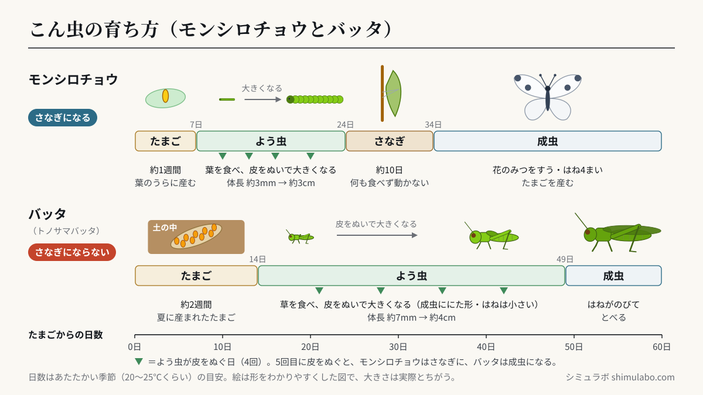
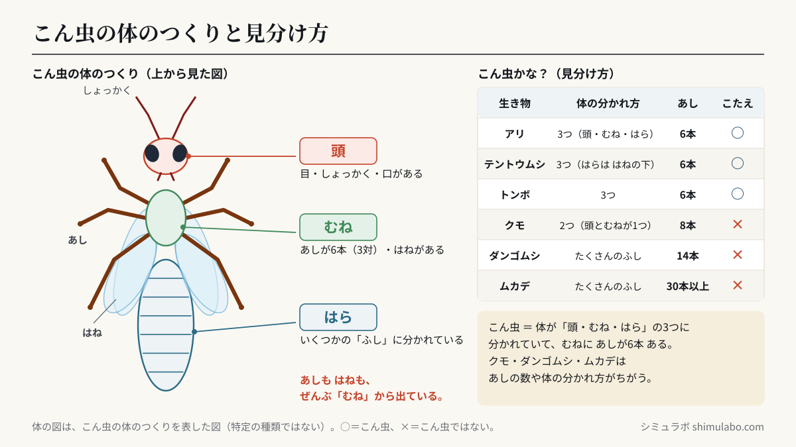

このシミュレーションでわかること
小学校3年の理科「身の回りの生物」（学習指導要領 第3学年 B（1））で学ぶ内容です。学習指導要領の解説（理科編 pp.39〜42）は、「卵→幼虫→蛹→成虫」と「卵→幼虫→成虫」のように育ち方のちがうこん虫をくらべること、成虫の体が頭・胸・腹の3つからできていて胸に3対6本のあしがあるものを「昆虫」という名前を使って説明できるようにすることを挙げています。植物は、内容の取扱いで「夏生一年生の双子葉植物」（ホウセンカ・ヒマワリなど）を扱うことになっています。
画面は4つです。①育ち方では、モンシロチョウとバッタ（トノサマバッタ）を同じ日数でならべ、早送りで育つようすをくらべます。②体のつくりパズルでは、頭・むね・はら・あし・はねのパーツを指で動かして、こん虫の体を組み立てます。③こん虫かな？では、アリ・クモ・テントウムシ・ダンゴムシ・トンボ・ムカデがこん虫かどうかを答え、体の分かれ方とあしの数をたしかめます。④植物の育ち方では、ホウセンカとヒマワリの育ち方を日数のスライダーで見て、根・くき・葉の名前をたしかめます。
授業での使い方
- 導入：モンシロチョウのたまごやよう虫を見つけたあと、「このよう虫は、これからどうなるかな」と予想させてから、①を早送りします。飼育を始める前の見通しや、休み中に見られなかった時期（さなぎから成虫が出てくるところなど）の確認に使えます。
- 展開：①で、たまごから同じ日数のときのモンシロチョウとバッタをくらべ、「ちがうところ」「同じところ」を話し合います。②のパズルでは、あしやはねを「はら」に付けようとするとヒントが出るので、あしがどこから出ているかを自分でたしかめられます。
- まとめ：③のクイズで、こん虫とこん虫でない生き物を「体の分かれ方」と「あしの数」で見分けます。④で植物の育ち方もならべ、こん虫も植物も「育つ順番が決まっている」ことをまとめます。画面のアドレスの最後に
#pazuru・#quiz・#shokubutsuを付けると、その画面から始まります。
児童への問いの例：
- モンシロチョウとバッタの育ち方で、ちがうところはどこでしょう。
- こん虫のあしは、体のどの部分から何本出ているでしょう。
- クモやダンゴムシがこん虫ではないのはなぜでしょう。
しくみ・解説






図はタップすると大きく表示されます。授業のプリント・スライド・板書計画に自由に使えます（出典「シミュラボ」とページのURLを添えてください）。
ことばの意味
- こん虫とは、成虫の体が頭・むね・はらの3つに分かれていて、むねに6本（3対）のあしがある動物のなかまです。
- よう虫とは、たまごからかえったあと、成虫になる前のこん虫のことです。食べ物を食べ、皮をぬいで大きくなります。
- さなぎとは、よう虫から成虫になるとちゅうのすがたで、何も食べず、ほとんど動きません。中で成虫の体がつくられます。
- 成虫とは、育ちきったこん虫で、はねのあるものが多く、たまごを産みます。
こん虫の育ち方（早見表）
| こん虫 | 育つ順番 | さなぎに |
|---|---|---|
| モンシロチョウ | たまご → よう虫 → さなぎ → 成虫 | なる |
| アゲハ | たまご → よう虫 → さなぎ → 成虫 | なる |
| カブトムシ | たまご → よう虫 → さなぎ → 成虫 | なる |
| バッタ | たまご → よう虫 → 成虫 | ならない |
| トンボ | たまご → よう虫（ヤゴ・水の中でくらす） → 成虫 | ならない |
| コオロギ・セミ | たまご → よう虫 → 成虫 | ならない |
このシミュレーションの日数（目安）
| こん虫 | 育つ順番と日数 | よう虫のようす |
|---|---|---|
| モンシロチョウ | たまご（0〜7日目） → よう虫（7〜24日目） → さなぎ（24〜34日目） → 成虫（34日目〜） | 4回皮をぬいで大きくなり、5回目に皮をぬぐとさなぎになる（体長 約3mm → 約3cm） |
| バッタ（トノサマバッタ） | たまご（0〜14日目） → よう虫（14〜49日目） → 成虫（49日目〜） | 5回皮をぬいで成虫になる（体長 約7mm → 成虫 約4〜6cm） |
日数は、あたたかい季節（20〜25℃くらい）の目安です。モンシロチョウは、たまご 約1週間、よう虫 約2〜3週間、さなぎ 約10日で成虫になります（このシミュレーションでは 34日目に成虫）。バッタは、夏に産まれたたまごが約2週間でかえり、よう虫の時期は約1か月です（49日目に成虫）。秋に産まれたバッタのたまごは、土の中で冬をこして、次の年にかえります。気温が低いと、どちらも日数が長くなります。
こん虫の体のつくり
| 部分 | あるもの | おもなはたらき |
|---|---|---|
| 頭 | 目・しょっかく・口がある | まわりのようすを感じる・食べる |
| むね | あしが6本（3対）、はねがあるものが多い | 歩く・とぶ |
| はら | いくつかの「ふし」に分かれている | 息をする・たまごを産む など |
こん虫かどうかの見分け方（早見表）
| 生き物 | 体の分かれ方 | あしの数 | こたえ |
|---|---|---|---|
| アリ | 3つ（頭・むね・はら） | 6本 | こん虫 |
| テントウムシ | 3つ（はらは、かたいはねの下） | 6本 | こん虫 |
| トンボ | 3つ | 6本 | こん虫 |
| クモ | 2つ（頭とむねが1つになった部分・はら） | 8本 | こん虫ではない |
| ダンゴムシ | たくさんのふしに分かれている | 14本 | こん虫ではない |
| ムカデ | たくさんのふしに分かれている | 30本以上 | こん虫ではない |
植物の育ち方と体のつくり
植物の体は根・くき・葉からできています。根は土の中にあり、くきは葉や花をつけています。たねから芽が出ると、はじめに子葉が出て、そのあと子葉とちがう形の葉がふえていきます。花がさいたあとに実ができ、実の中にたねができると、植物はかれます。
| 植物 | 芽が出る | 葉がふえる | 花 | 実 | かれる |
|---|---|---|---|---|---|
| ホウセンカ | 芽が出る（子葉）（5月7日〜） | 葉がふえる・くきがのびる（5月15日〜） | 花がさく（6月30日〜） | 実ができる（7月20日〜） | かれる（9月23日〜） |
| ヒマワリ | 芽が出る（子葉）（5月9日〜） | 葉がふえる・くきがのびる（5月17日〜） | 花がさく（7月10日〜） | 実（たね）ができる（8月4日〜） | かれる（9月18日〜） |
表の日付は、5月1日にたねをまいたときの目安です（このシミュレーションの高さの目安：ホウセンカ 約50cm、ヒマワリ 約179cm。ヒマワリの高さは品種によって大きくちがいます）。
生き物をあつかうときの注意
- こん虫や植物、土にさわったあとは、石けんで手をあらいましょう。
- よう虫は手で直接つままず、葉ごと動かします。飼育ケースの中は、ふんをとって清潔にします。
- 野外では、ハチや毒のある毛虫などに近づかないようにします。つかまえる生き物は必要な数だけにし、観察が終わったら元の場所にもどしましょう。
このシミュレーションで単純にしていること
- 日数・体長・高さは目安です。実際は気温・えさ・品種などで変わります。
- たまごやよう虫は、見やすいように実際より大きくかいています（たまごは虫めがねでかくだいした図もつけています）。体の図は、写真ではなく形をわかりやすくした模式図です。
- バッタはトノサマバッタの、夏に産まれたたまごの場合です。パズルの虫は、特定の種類ではない、こん虫の体のつくりを表した図です。
参考
- 文部科学省「小学校学習指導要領（平成29年告示）解説 理科編」第3学年 B（1）身の回りの生物（pp.39〜42）（文部科学省 小学校学習指導要領解説のページ）
- 小学校理科（3年）の教科書の「チョウを育てよう」「こん虫のかんさつ」「植物の育ち方」の単元
引用・転載について
本ページのシミュレーション結果・数値は、出典を明記いただければブログ・ニュース記事・SNS・授業や社内資料への引用を歓迎します。事前連絡は不要です。
出典：シミュラボ「こん虫の育ち方と体のつくりシミュレーター（モンシロチョウとバッタ・植物の育ち方）」 https://shimulabo.com/sims/konchu-sodachi/よくある質問
- こん虫とは、どんな生き物ですか？
- 成虫の体が頭・むね・はらの3つに分かれていて、むねに6本（3対）のあしがある動物のなかまです。チョウ・バッタ・トンボ・アリ・テントウムシなどがこん虫です。
- さなぎにならないこん虫には、何がいますか？
- バッタ・トンボ・コオロギ・セミなどは、たまご→よう虫→成虫と育ち、さなぎになりません。チョウ・カブトムシ・テントウムシなどは、たまご→よう虫→さなぎ→成虫と育ちます。
- クモやダンゴムシは、こん虫ですか？
- どちらもこん虫ではありません。クモは体が2つに分かれていて、あしが8本です。ダンゴムシは体がたくさんのふしに分かれていて、あしが14本です。
- モンシロチョウは、たまごから何日くらいで成虫になりますか？
- あたたかい季節で約1か月あまりです。たまご約1週間、よう虫約2〜3週間、さなぎ約10日が目安です。気温が低いと長くかかります。
- こん虫のあしやはねは、体のどこから出ていますか？
- あしもはねも、すべて「むね」から出ています。あしは6本、はねは4まいのものが多いですが、はねが2まいのもの（ハエなど）や、はねのないもの（アリのはたらきアリなど）もいます。
- 植物は、どんな順番で育ちますか？
- たねから芽が出て子葉が開き、葉がふえてくきがのび、花がさき、実ができてたねができると、かれます。体は根・くき・葉からできています。